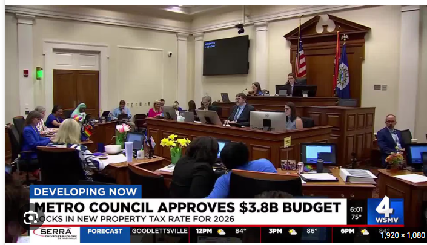
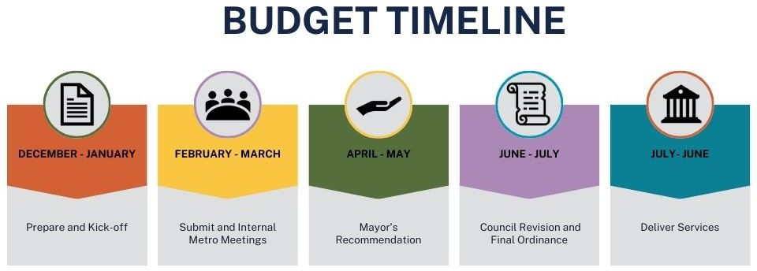
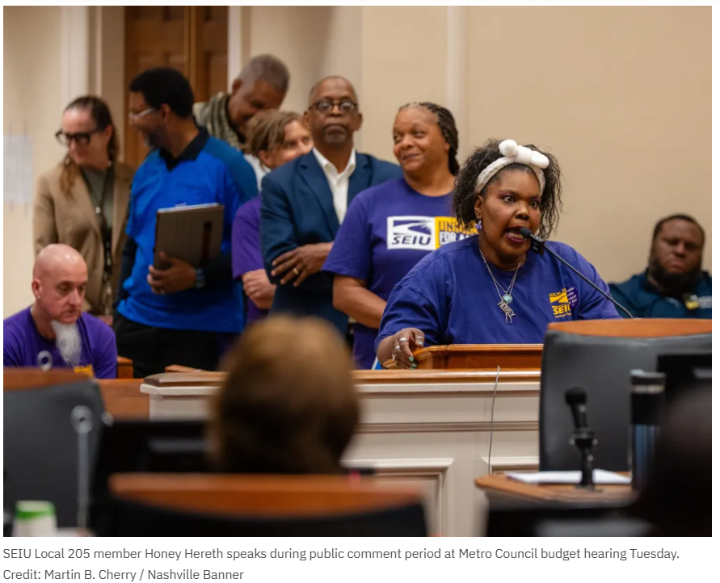
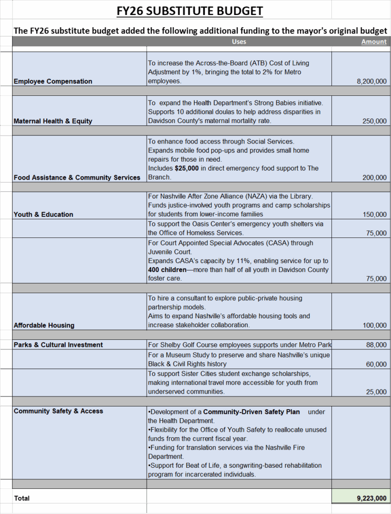
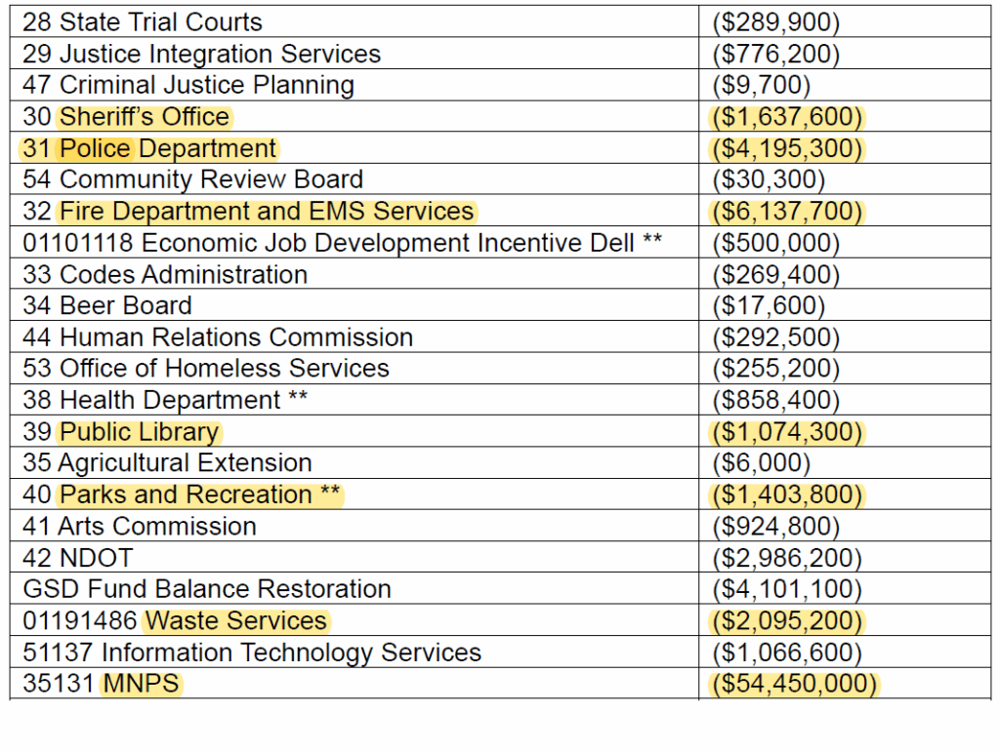

Chair Porterfield’s FY26 Substitute Budget
This week, your Metro Council passed the FY26 budget—officially adopting a $3.8 billion spending plan that will guide our city through the next fiscal year. This budget is a reflection of our values: a commitment to working families, public education, affordable housing, community safety, and our city’s workforce. It also represents months of tireless work, collaboration, and heartfelt public input.
Tuesday night, long after the gavel fell and the chambers cleared, I sat alone in my office, staring at the final numbers one more time. Not because I doubted our work—but because I wanted to feel again what this moment represents. $3.8 billion. On paper, it’s just a number. But behind every line item in this budget, I see faces. I see neighbors. I see stories.
This year’s budget wasn’t easy. The choices we made weren’t perfect. But they were intentional. And most of all—they were people-centered.

With residents seeing an increase in their taxes due to the increased property assessment, how do we justify voting for such a budget? As your Council Member At-Large, I want to take this opportunity to walk you through what passed on Tuesday night, how we got here, and why it matters.
Many do not trust the government. I believe this is due to a lack of transparency and information. This is also fueled by misinformation. After my election, I promise to share as much as possible with residents. This was the reason behind my budget conversations. I thank the over 1,000 of you who open my newsletter each week.
This vote is no exception. If anything it is more important than ever since it involves the budget. While this may not elevate the feelings of those upset about the budget, I believe we owe you our reasons for how we vote and the process it took to get us here.
To that end, I met with Budget Chair Porterfield to discuss her substitute budget. Below are my questions and her responses on how we got here.
The Start of the Journey
Congratulations Chair Porterfield on passing your second substitute budgte. Thanks for your leadership.
Question 1- Can you share with us the budget process?
The journey began, as it always does, on May 1, when the mayor presented his proposed budget. This year was different—it was Mayor O’Connell’s first tax increase, and the financial outlook was cautious. Revenues were flat. Growth had slowed. The mayor called it a “Keep the Lights On” budget, and in many ways, it was. But as we all know, just keeping the lights on isn’t enough when entire communities are still waiting to be seen.
From there, we enter a six-week sprint of departmental hearings, public comment sessions, and internal deliberations. I’ve done this seven times now, and every year I come back to the same principle: a budget is a moral document. It tells the story of what we value. And this year, I wanted to make sure our budget told the story of Nashville’s working families, its youth, and its unsung heroes—the people who keep this city running every single day.
From public hearings to department questionnaires to wish list submissions, we gathered $83 million in councilmember requests. But the challenge? In a balanced budget, any addition must come with an offset. In the end, we made $9 million in strategic, people-centered changes through the substitute.

Listening to the People
Question 2- How did you decide what makes it to your substitute?
Before we made a single change, we listened.
Over 120 community members came to speak at our public hearing. I moved to the back row that night, so I could sit closer to them. I wanted to hear their hopes and concerns up close—unfiltered. And what I heard was powerful:
“Protect our kids.”
“Give us a living wage.”
“Don’t forget about housing.”
“Help us feed our neighbors.”
We also received over $83 million in budget requests from councilmembers, and that was the hard part—because this is a zero-sum game. If we added money for one cause, we had to find it from somewhere else. There’s no magic pot of money hidden in the budget. Every dollar has a purpose.
But we found a way.

Crafting a People-Centered Substitute
Question 3- What is in your substitute budget?
Working with our finance team, we crafted a substitute budget that added $9 million in targeted investments. Every one of those dollars went to something that matters deeply to this city:
Key Investments in the FY2026 Substitute Budget Include:

Making the Hard Decisions
Question 4- Did you consider a reduction in taxes?
Some of the hardest conversations this year were about taxes.
I’m a homeowner. I’m a single mom. I feel it too. When property taxes go up, it stings. So yes, we looked at cutting the tax rate. But here’s the truth: cutting $0.16 from the rate would have saved the average homeowner just $15–$20 a month—but it would have slashed $54 million from our schools and millions more from fire, police, and transit.
I couldn’t justify that trade. Not when we’re still recovering from years of underinvestment. Not when so many people came to us asking for help—not less of it.
Many councilmembers including myself, looked for ways to reduce taxes but there was no viable way to do so without layoffs or reducing services. The substitute that was ultimately withdrawn would have resulted in cuts to several departments as shown in the image below.

Amendments to the Substitute
Prior to its passage, the chair’s substitute was amended with the following additional changes. The FY26 operating budget is now the Chair’s Substitute Budget as amended.
- $50,000 Music City Construction Careers CM Sepulveda
- $112,400 Domestic Violence Dispossession Investigator CM Gadd
- $25,000 Neighbor to Neighbor CM Toombs
- $20,000 Spray & Neuter Services CM Styles
- $87,000 Sexual Assault Center Safe Bar Program CM Styles
What We Achieved Together
On June 18, we passed a final $3.8 billion budget. Here’s what that means in real terms:
- Education stays our largest investment—37% of the budget. Metro Nashville Public Schools receiving 37.2% of total funding. The school allocation is 13% higher than in the previous fiscal year
- Our employees are better supported. Raises, wage floors, and a renewed commitment to recruitment and retention.
- Housing and food insecurity are addressed head-on. With millions for housing strategies and targeted support for food deserts.
- Public safety is enhanced. We funded new officers, but we also supported alternatives like REACH and youth programs that prevent crime before it starts.
- Our city’s fiscal health remains strong. We preserved our reserves and made no reckless cuts, protecting our AA+ credit rating and our ability to serve long-term.
If you miss this conversation with Chair Porterfield, you can watch it at the link below
Reflections and Gratitude
I’ve said it before and I’ll say it again: you don’t need a seat at the Council dais to shape the budget. You’ve done it with your presence, your testimony, and your persistence.
To every resident who spoke at a hearing, emailed a councilmember, or joined us on Facebook Live—thank you. You reminded us who this budget is really for.
And to my colleagues—thank you for collaborating, compromising, and standing firm where it counted.
The Work Continues
Budgets are annual, but justice is lifelong.
Now comes the real work: implementing these programs, monitoring their impact, and making sure they reach the people who need them most. I’ll be there every step of the way—listening, learning, and lifting up your voices.
Until then, please stay engaged. Reach out. Keep speaking up. Because when you do, things change.
Thank you for allowing me the honor to serve.
With gratitude,
Zulfat Suara
Metro Council Member At-Large